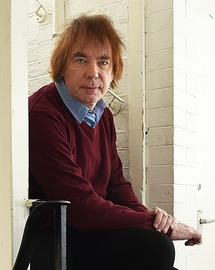

|
FRMS President Julian Lloyd Webber Cellist Julian Lloyd Webber OBE is widely regarded as one of the finest musicians of his generation. Described by Strad magazine as ‘the doyen of British cellists’, Julian Lloyd Webber has enjoyed one of the most creative and successful careers in classical music today. When, in September 2020, he stepped down from his five-year tenure as principal of the Royal Bimingham Conservatoire he was appointed Emeritus Professor of Performing Arts by Birmingham City University. As founder of the British Government’s In Harmony programme and the chair of Sistema England, he continues to promote personal and community development in some of England’s most deprived areas. He was elected Fellow of the Royal College of Music in 1994 and – in recognition of his lifelong devotion to the music of Elgar – elected President of the Elgar Society in 2009. In November 2014 he accepted our invitation to become President of the FRMS. In April 2014 Julian announced his retirement from public performance as a cellist because of a herniated disc in his neck. Julian was appointed Officer of the Order of the British Empire (OBE) in the Queen's 2021 Birthday Honours for services to music. Learn more about Julian on his personal website or on Wikipedia. |
 |